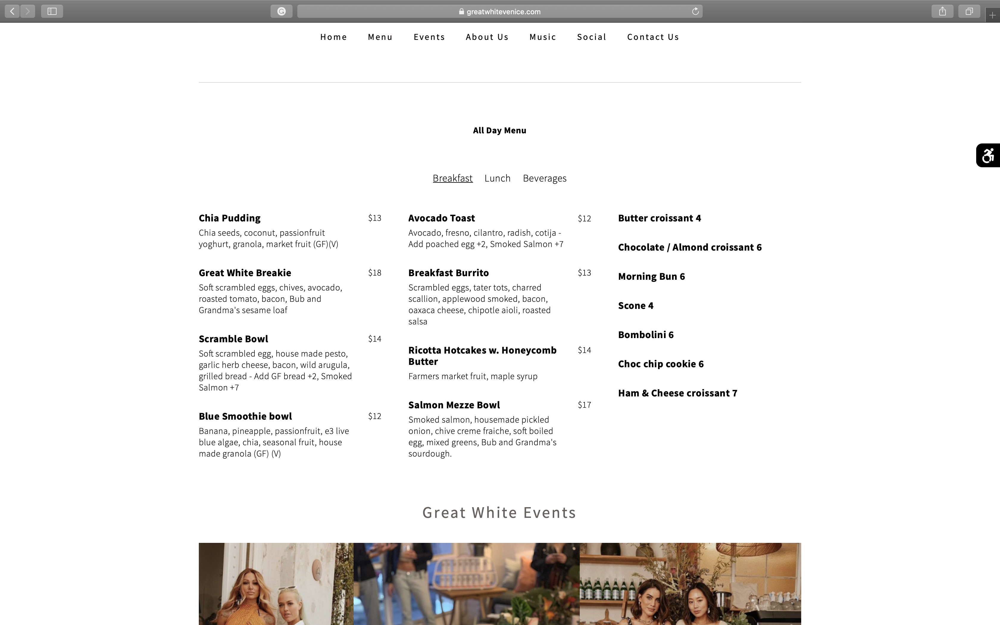
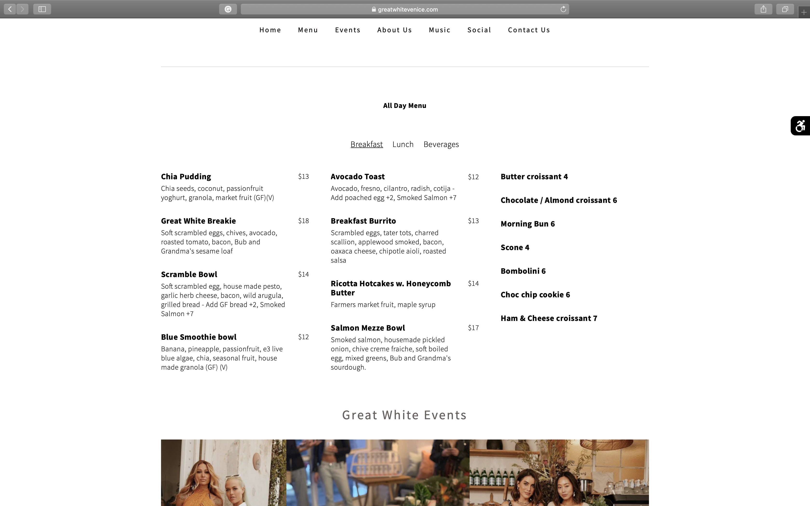

Final project proposal
Introduction
Kate's Place
We are a wholsome and natural cafe sourcing our ingredients from local vendors. Our goal is to create a place to enjoy good coffee and baked good with quality friends. Our small menu complements our quality coffee.
Target audience
People interested in natural and helthy treats and coffee lovers.
Look at the menu to see what we offer, get a feel for the shop, and order our baked good mixes.
Comparative analysis
Great White Venice
 

Spearhead Coffee


Seeds


Website content
Home
"Change the world. Start with coffee."
[Cups of coffee on a table.]
Menu
Coffee
House roast, americano, espresso, machiatto, flat white, cappuccino, latte, iced latte, nitro cold brew.
Specialty drinks
Green tea matcha latte, golden tumeric latte, chai latte.
Tea
Smooties
Strawberry banana, mango pineapple, berrie blast.
Baked Goods.
Cinnamon roll, croissant, chocolate croissant, bluberry scone, coffee cake, chocolate chip cookie, double chocolate cookie, pumpkin bread slice, banana nut bread slice.
About Us
Welcome to Kate's Place! We specialize in good coffe and healthy baked goods. We root ourselves in providing healthy and natural baked goods, all gluten free and refined sugar free but tatse just as great. We wanted to create an atmosphere that invites people to gather and enjoy time together.
[Interior of Kate's Place.]
Shop
Banana nut bread mix, pumpkin bread mix, chocolate chip cookie mix, double chocolate cookie mix, blueberry scone mix.
[Packages of baked good mixes.]
Photos
[Cups of coffee. Interior of Kate's Place. Baked goods on a plate.]
Contact Us
Phone: (805) 588-9393 Address: 28 Pacific Dr. Encinitas CA, 93506